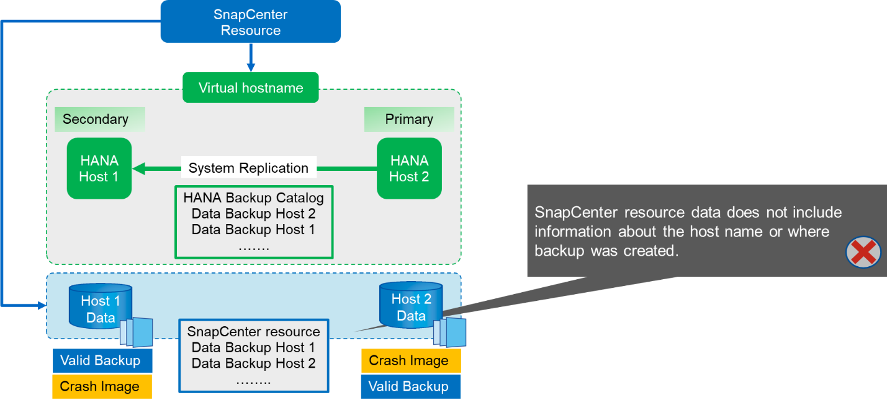
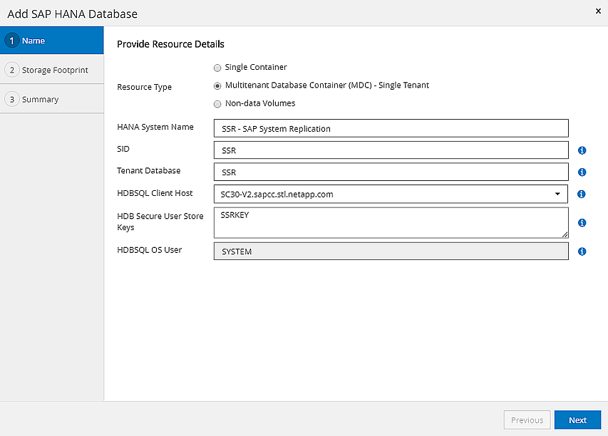
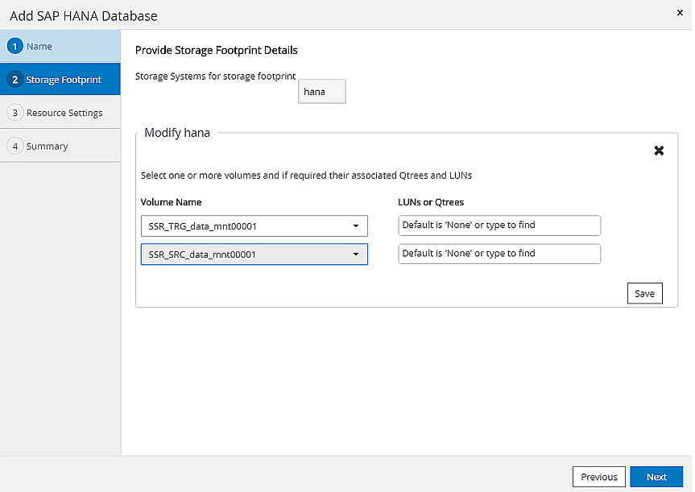
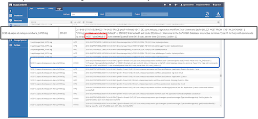
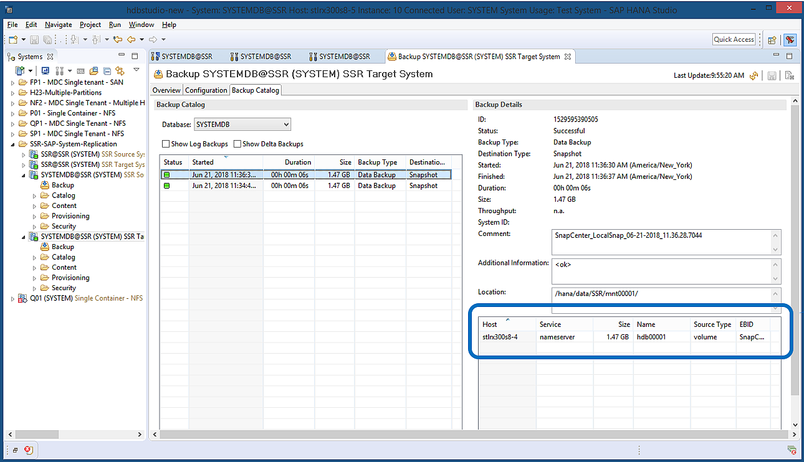
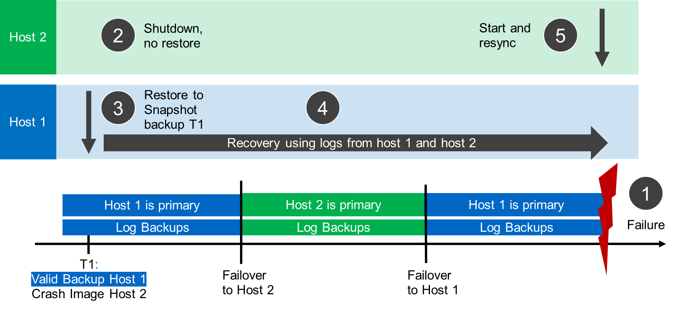
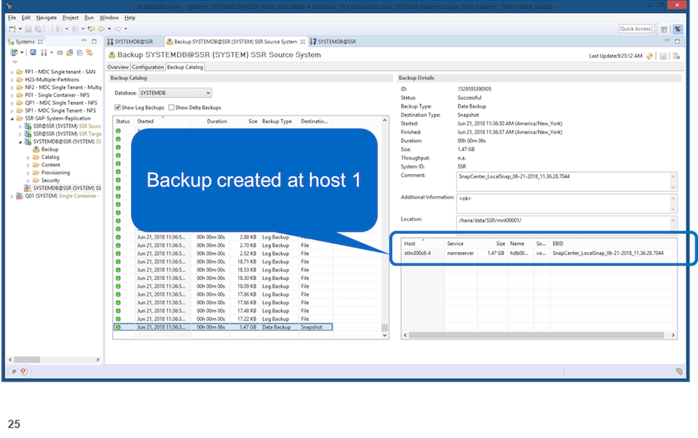
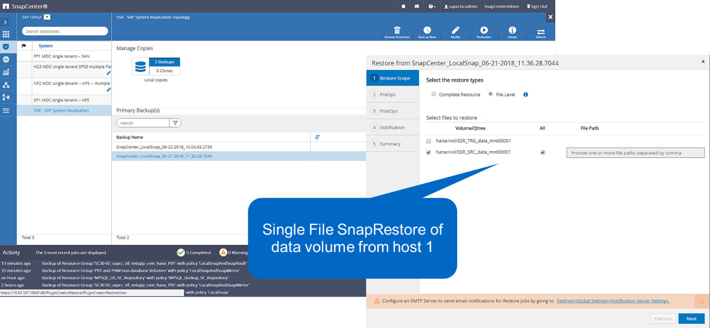
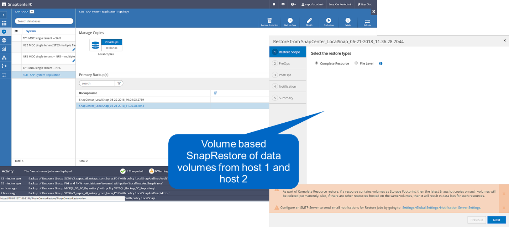

Request doc changes
Request doc changes Edit this page
Edit this page Learn how to contribute
Learn how to contributeSnapCenter configuration with a single resource
Contributors
A SnapCenter resource is configured with the virtual IP address (host name) of the HANA System Replication environment. With this approach, SnapCenter always communicates with the primary host, regardless of whether host 1 or host 2 is primary. The data volumes of both SAP HANA hosts are included in the SnapCenter resource.

|
We assume that the virtual IP address is always bound to the primary SAP HANA host. The failover of the virtual IP address is performed outside SnapCenter as part of the HANA System Replication failover workflow. |
When a backup is executed with host 1 as the primary host, a database-consistent Snapshot backup is created at the data volume of host 1. Because the data volume of host 2 is part of the SnapCenter resource, another Snapshot copy is created for this volume. This Snapshot copy is not database consistent; rather, it is just a crash image of the secondary host.
The SAP HANA backup catalog and the SnapCenter resource includes the backup created at host 1.

The following figure shows the backup operation after failover to host 2 and replication from host 2 to host 1. SnapCenter automatically communicates with host 2 by using the virtual IP address configured in the SnapCenter resource. Backups are now created at host 2. Two Snapshot copies are created by SnapCenter: a database-consistent backup at the data volume at host 2 and a crash image Snapshot copy at the data volume at host 1. The SAP HANA backup catalog and the SnapCenter resource now include the backup created at host 1 and the backup created at host 2.
Housekeeping of data and log backups is based on the defined SnapCenter retention policy, and backups are deleted regardless of which host is primary or secondary.

As discussed in the section Storage Snapshot Backups and SAP System Replication, a restore operation with storage-based Snapshot backups is different, depending on which backup must be restored. It is important to identify which host the backup was created at to determine if the restore can be performed at the local storage volume, or if the restore must be performed at the other host’s storage volume.
With single-resource SnapCenter configuration, SnapCenter is not aware of where the backup was created. Therefore, NetApp recommends that you add a prebackup script to the SnapCenter backup workflow to identify which host is currently the primary SAP HANA host.
The following figure depicts identification of the backup host.

SnapCenter configuration
The following figure shows the lab setup and an overview of the required SnapCenter configuration.

To perform backup operations regardless of which SAP HANA host is primary and even when one host is down, the SnapCenter SAP HANA plug-in must be deployed on a central plug-in host. In our lab setup, we used the SnapCenter server as a central plug-in host, and we deployed the SAP HANA plug-in on the SnapCenter server.
A user was created in the HANA database to perform backup operations. A user store key was configured at the SnapCenter server on which the SAP HANA plug-in was installed. The user store key includes the virtual IP address of the SAP HANA System Replication hosts (ssr-vip).
hdbuserstore.exe -u SYSTEM set SSRKEY ssr-vip:31013 SNAPCENTER <password>
You can find more information about SAP HANA plug-in deployment options and user store configuration in the technical report TR-4614: SAP HANA Backup and Recovery with SnapCenter.
In SnapCenter, the resource is configured as shown in the following figure using the user store key, configured before, and the SnapCenter server as the hdbsql communication host.

The data volumes of both SAP HANA hosts are included in the storage footprint configuration, as the following figure shows.

As discussed before, SnapCenter is not aware of where the backup was created. NetApp therefore recommends that you add a pre- backup script in the SnapCenter backup workflow to identify which host is currently the primary SAP HANA host. You can perform this identification using a SQL statement that is added to the backup workflow, as the following figure shows.
Select host from “SYS”.M_DATABASE

SnapCenter backup operation
Backup operations are now executed as usual. Housekeeping of data and log backups is performed independent of which SAP HANA host is primary or secondary.
The backup job logs include the output of the SQL statement, which allows you to identify the SAP HANA host where the backup was created.
The following figure shows the backup job log with host 1 as the primary host.

This figure shows the backup job log with host 2 as the primary host.

The following figure shows the SAP HANA backup catalog in SAP HANA Studio. When the SAP HANA database is online, the SAP HANA host where the backup was created is visible in SAP HANA Studio.
|
|
The SAP HANA backup catalog on the file system, which is used during a restore and recovery operation, does not include the host name where the backup was created. The only way to identify the host when the database is down is to combine the backup catalog entries with the backup.log file of both SAP HANA hosts.
|

Restore and recovery
As discussed before, you must be able to identify where the selected backup was created to define the required restore operation. If the SAP HANA database is still online, you can use SAP HANA Studio to identify the host at which the backup was created. If the database is offline, the information is only available in the SnapCenter backup job log.
The following figure illustrates the different restore operations depending on the selected backup.
If a restore operation must be performed after timestamp T3 and host 1 is the primary, you can restore the backup created at T1 or T3 by using SnapCenter. These Snapshot backups are available at the storage volume attached to host 1.
If you need to restore using the backup created at host 2 (T2), which is a Snapshot copy at the storage volume of host 2, the backup needs to be made available to host 1. You can make this backup available by creating a NetApp FlexClone copy from the backup, mounting the FlexClone copy to host 1, and copying the data to the original location.

With a single SnapCenter resource configuration, Snapshot copies are created at both storage volumes of both SAP HANA System Replication hosts. Only the Snapshot backup that is created at the storage volume of the primary SAP HANA host is valid to use for forward recovery. The Snapshot copy created at the storage volume of the secondary SAP HANA host is a crash image that cannot be used for forward recovery.
A restore operation with SnapCenter can be performed in two different ways:
-
Restore only the valid backup
-
Restore the complete resource, including the valid backup and the crash imageThe following sections discuss the two different restore operations in more detail.
A restore operation from a backup that was created at the other host is described in the section Restore and Recovery from a Backup Created at the Other Host.
The following figure depicts restore operations with a single SnapCenter resource configuration.

SnapCenter restore of the valid backup only
The following figure shows an overview of the restore and recovery scenario described in this section.
A backup has been created at T1 at host 1. A failover has been performed to host 2. After a certain point in time, another failover back to host 1 was performed. At the current point in time, host 1 is the primary host.
-
A failure occurred and you must restore to the backup created at T1 at host 1.
-
The secondary host (host 2) is shut down, but no restore operation is executed.
-
The storage volume of host 1 is restored to the backup created at T1.
-
A forward recovery is performed with logs from host 1 and host 2.
-
Host 2 is started, and a system replication resynchronization of host 2 is automatically started.

The following figure shows the SAP HANA backup catalog in SAP HANA Studio. The highlighted backup shows the backup created at T1 at host 1.

A restore and recovery operation is started in SAP HANA Studio. As the following figure shows, the name of the host where the backup was created is not visible in the restore and recovery workflow.
|
|
In our test scenario, we were able to identify the correct backup (the backup created at host 1) in SAP HANA Studio when the database was still online. If the database is not available, you must check the SnapCenter backup job log to identify the right backup. |

In SnapCenter, the backup is selected and a file-level restore operation is performed. On the file-level restore screen, only the host 1 volume is selected so that only the valid backup is restored.

After the restore operation, the backup is highlighted in green in SAP HANA Studio. You don’t have to enter an additional log backup location, because the file path of log backups of host 1 and host 2 are included in the backup catalog.

After forward recovery has finished, the secondary host (host 2) is started and SAP HANA System Replication resynchronization is started.
|
|
Even though the secondary host is up-to-date (no restore operation was performed for host 2), SAP HANA executes a full replication of all data. This behavior is standard after a restore and recovery operation with SAP HANA System Replication. |

SnapCenter restore of valid backup and crash image
The following figure shows an overview of the restore and recovery scenario described in this section.
A backup has been created at T1 at host 1. A failover has been performed to host 2. After a certain point in time, another failover back to host 1 was performed. At the current point in time, host 1 is the primary host.
-
A failure occurred and you must restore to the backup created at T1 at host 1.
-
The secondary host (host 2) is shut down and the T1 crash image is restored.
-
The storage volume of host 1 is restored to the backup created at T1.
-
A forward recovery is performed with logs from host 1 and host 2.
-
Host 2 is started and a system replication resynchronization of host 2 is automatically started.

The restore and recovery operation with SAP HANA Studio is identical to the steps described in the section SnapCenter restore of the valid backup only.
To perform the restore operation, select Complete Resource in SnapCenter. The volumes of both hosts are restored.

After forward recovery has been completed, the secondary host (host 2) is started and SAP HANA System Replication resynchronization is started. Full replication of all data is executed.